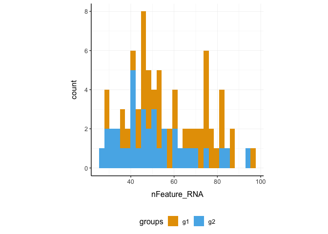
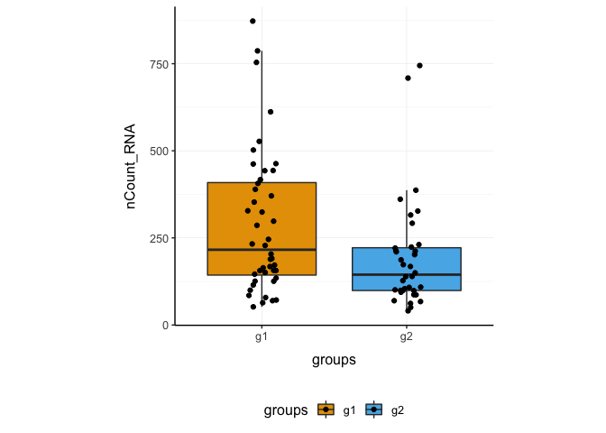
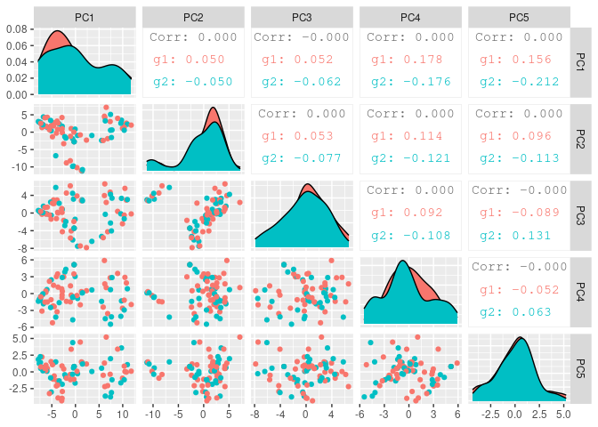
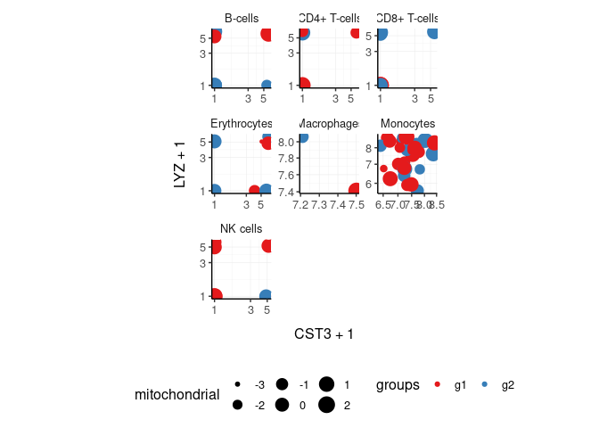
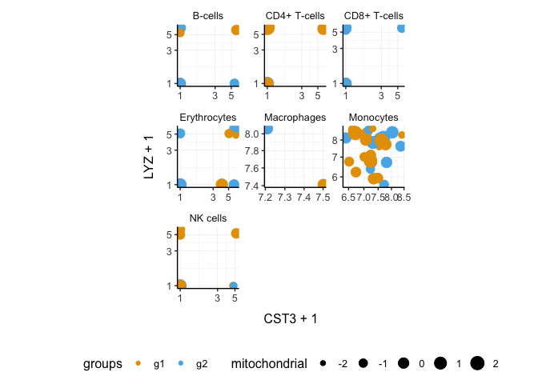
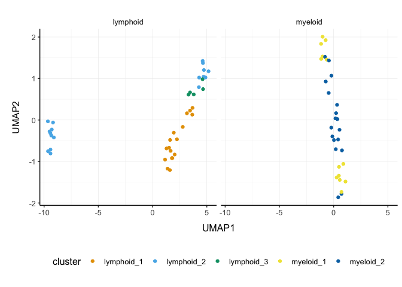

Brings SingleCellExperiment to the tidyverse!
Website: tidySingleCellExperiment
Please also have a look at
- tidyseurat for tidy manipulation of Seurat objects
- tidybulk for tidy bulk RNA-seq data analysis
- nanny for tidy high-level data analysis and manipulation
- tidygate for adding custom gate information to your tibble
- tidyHeatmap for heatmaps produced with tidy principles
Introduction
tidySingleCellExperiment provides a bridge between Bioconductor single-cell packages [@amezquita2019orchestrating] and the tidyverse [@wickham2019welcome]. It creates an invisible layer that enables viewing the Bioconductor SingleCellExperiment object as a tidyverse tibble, and provides SingleCellExperiment-compatible dplyr, tidyr, ggplot and plotly functions. This allows users to get the best of both Bioconductor and tidyverse worlds.
Functions/utilities available
| SingleCellExperiment-compatible Functions | Description |
|---|---|
all |
After all tidySingleCellExperiment is a SingleCellExperiment object, just better |
| tidyverse Packages | Description |
|---|---|
dplyr |
All dplyr tibble functions (e.g. tidySingleCellExperiment::select) |
tidyr |
All tidyr tibble functions (e.g. tidySingleCellExperiment::pivot_longer) |
ggplot2 |
ggplot (tidySingleCellExperiment::ggplot) |
plotly |
plot_ly (tidySingleCellExperiment::plot_ly) |
| Utilities | Description |
|---|---|
tidy |
Add tidySingleCellExperiment invisible layer over a SingleCellExperiment object |
as_tibble |
Convert cell-wise information to a tbl_df
|
join_features |
Add feature-wise information, returns a tbl_df
|
Installation
if (!requireNamespace("BiocManager", quietly=TRUE))
install.packages("BiocManager")
BiocManager::install("tidySingleCellExperiment")Load libraries used in this vignette.
Create tidySingleCellExperiment, the best of both worlds!
This is a SingleCellExperiment object but it is evaluated as a tibble. So it is compatible both with SingleCellExperiment and tidyverse.
pbmc_small_tidy <- tidySingleCellExperiment::pbmc_small It looks like a tibble
pbmc_small_tidy## # A SingleCellExperiment-tibble abstraction: 80 × 17
## # [90mFeatures=230 | Cells=80 | Assays=counts, logcounts[0m
## .cell orig.…¹ nCoun…² nFeat…³ RNA_s…⁴ lette…⁵ groups RNA_s…⁶ file ident
## <chr> <fct> <dbl> <int> <fct> <fct> <chr> <fct> <chr> <fct>
## 1 ATGCCAGAA… Seurat… 70 47 0 A g2 0 ../d… 0
## 2 CATGGCCTG… Seurat… 85 52 0 A g1 0 ../d… 0
## 3 GAACCTGAT… Seurat… 87 50 1 B g2 0 ../d… 0
## 4 TGACTGGAT… Seurat… 127 56 0 A g2 0 ../d… 0
## 5 AGTCAGACT… Seurat… 173 53 0 A g2 0 ../d… 0
## 6 TCTGATACA… Seurat… 70 48 0 A g1 0 ../d… 0
## 7 TGGTATCTA… Seurat… 64 36 0 A g1 0 ../d… 0
## 8 GCAGCTCTG… Seurat… 72 45 0 A g1 0 ../d… 0
## 9 GATATAACA… Seurat… 52 36 0 A g1 0 ../d… 0
## 10 AATGTTGAC… Seurat… 100 41 0 A g1 0 ../d… 0
## # … with 70 more rows, 7 more variables: PC_1 <dbl>, PC_2 <dbl>, PC_3 <dbl>,
## # PC_4 <dbl>, PC_5 <dbl>, tSNE_1 <dbl>, tSNE_2 <dbl>, and abbreviated
## # variable names ¹orig.ident, ²nCount_RNA, ³nFeature_RNA, ⁴RNA_snn_res.0.8,
## # ⁵letter.idents, ⁶RNA_snn_res.1
## # ℹ Use `print(n = ...)` to see more rows, and `colnames()` to see all variable namesBut it is a SingleCellExperiment object after all
assay(pbmc_small_tidy, "counts")[1:5, 1:5]## 5 x 5 sparse Matrix of class "dgCMatrix"
## ATGCCAGAACGACT CATGGCCTGTGCAT GAACCTGATGAACC TGACTGGATTCTCA
## MS4A1 . . . .
## CD79B 1 . . .
## CD79A . . . .
## HLA-DRA . 1 . .
## TCL1A . . . .
## AGTCAGACTGCACA
## MS4A1 .
## CD79B .
## CD79A .
## HLA-DRA 1
## TCL1A .Annotation polishing
We may have a column that contains the directory each run was taken from, such as the “file” column in pbmc_small_tidy.
pbmc_small_tidy$file[1:5]## [1] "../data/sample2/outs/filtered_feature_bc_matrix/"
## [2] "../data/sample1/outs/filtered_feature_bc_matrix/"
## [3] "../data/sample2/outs/filtered_feature_bc_matrix/"
## [4] "../data/sample2/outs/filtered_feature_bc_matrix/"
## [5] "../data/sample2/outs/filtered_feature_bc_matrix/"We may want to extract the run/sample name out of it into a separate column. Tidyverse extract can be used to convert a character column into multiple columns using regular expression groups.
# Create sample column
pbmc_small_polished <-
pbmc_small_tidy %>%
extract(file, "sample", "../data/([a-z0-9]+)/outs.+", remove=FALSE)
# Reorder to have sample column up front
pbmc_small_polished %>%
select(sample, everything())## # A SingleCellExperiment-tibble abstraction: 80 × 18
## # [90mFeatures=230 | Cells=80 | Assays=counts, logcounts[0m
## .cell sample orig.…¹ nCoun…² nFeat…³ RNA_s…⁴ lette…⁵ groups RNA_s…⁶ file
## <chr> <chr> <fct> <dbl> <int> <fct> <fct> <chr> <fct> <chr>
## 1 ATGCCAGA… sampl… Seurat… 70 47 0 A g2 0 ../d…
## 2 CATGGCCT… sampl… Seurat… 85 52 0 A g1 0 ../d…
## 3 GAACCTGA… sampl… Seurat… 87 50 1 B g2 0 ../d…
## 4 TGACTGGA… sampl… Seurat… 127 56 0 A g2 0 ../d…
## 5 AGTCAGAC… sampl… Seurat… 173 53 0 A g2 0 ../d…
## 6 TCTGATAC… sampl… Seurat… 70 48 0 A g1 0 ../d…
## 7 TGGTATCT… sampl… Seurat… 64 36 0 A g1 0 ../d…
## 8 GCAGCTCT… sampl… Seurat… 72 45 0 A g1 0 ../d…
## 9 GATATAAC… sampl… Seurat… 52 36 0 A g1 0 ../d…
## 10 AATGTTGA… sampl… Seurat… 100 41 0 A g1 0 ../d…
## # … with 70 more rows, 8 more variables: ident <fct>, PC_1 <dbl>, PC_2 <dbl>,
## # PC_3 <dbl>, PC_4 <dbl>, PC_5 <dbl>, tSNE_1 <dbl>, tSNE_2 <dbl>, and
## # abbreviated variable names ¹orig.ident, ²nCount_RNA, ³nFeature_RNA,
## # ⁴RNA_snn_res.0.8, ⁵letter.idents, ⁶RNA_snn_res.1
## # ℹ Use `print(n = ...)` to see more rows, and `colnames()` to see all variable namesPreliminary plots
Set colours and theme for plots.
# Use colourblind-friendly colours
friendly_cols <- dittoSeq::dittoColors()
# Set theme
custom_theme <-
list(
scale_fill_manual(values=friendly_cols),
scale_color_manual(values=friendly_cols),
theme_bw() +
theme(
panel.border=element_blank(),
axis.line=element_line(),
panel.grid.major=element_line(size=0.2),
panel.grid.minor=element_line(size=0.1),
text=element_text(size=12),
legend.position="bottom",
aspect.ratio=1,
strip.background=element_blank(),
axis.title.x=element_text(margin=margin(t=10, r=10, b=10, l=10)),
axis.title.y=element_text(margin=margin(t=10, r=10, b=10, l=10))
)
)We can treat pbmc_small_polished as a tibble for plotting.
Here we plot number of features per cell.
pbmc_small_polished %>%
tidySingleCellExperiment::ggplot(aes(nFeature_RNA, fill=groups)) +
geom_histogram() +
custom_theme## `stat_bin()` using `bins = 30`. Pick better value with `binwidth`.
Here we plot total features per cell.
pbmc_small_polished %>%
tidySingleCellExperiment::ggplot(aes(groups, nCount_RNA, fill=groups)) +
geom_boxplot(outlier.shape=NA) +
geom_jitter(width=0.1) +
custom_theme
Here we plot abundance of two features for each group.
pbmc_small_polished %>%
join_features(features=c("HLA-DRA", "LYZ")) %>%
ggplot(aes(groups, .abundance_counts + 1, fill=groups)) +
geom_boxplot(outlier.shape=NA) +
geom_jitter(aes(size=nCount_RNA), alpha=0.5, width=0.2) +
scale_y_log10() +
custom_theme## tidySingleCellExperiment says: This operation lead to duplicated cell names. A data frame is returned for independent data analysis.
Preprocess the dataset
We can also treat pbmc_small_polished as a SingleCellExperiment object and proceed with data processing with Bioconductor packages, such as scran [@lun2016pooling] and scater [@mccarthy2017scater].
# Identify variable genes with scran
variable_genes <-
pbmc_small_polished %>%
modelGeneVar() %>%
getTopHVGs(prop=0.1)
# Perform PCA with scater
pbmc_small_pca <-
pbmc_small_polished %>%
runPCA(subset_row=variable_genes)## Warning in check_numbers(k = k, nu = nu, nv = nv, limit = min(dim(x)) - : more
## singular values/vectors requested than available
## Warning in (function (A, nv = 5, nu = nv, maxit = 1000, work = nv + 7, reorth =
## TRUE, : You're computing too large a percentage of total singular values, use a
## standard svd instead.
pbmc_small_pca## # A SingleCellExperiment-tibble abstraction: 80 × 18
## # [90mFeatures=230 | Cells=80 | Assays=counts, logcounts[0m
## .cell orig.…¹ nCoun…² nFeat…³ RNA_s…⁴ lette…⁵ groups RNA_s…⁶ file sample
## <chr> <fct> <dbl> <int> <fct> <fct> <chr> <fct> <chr> <chr>
## 1 ATGCCAGA… Seurat… 70 47 0 A g2 0 ../d… sampl…
## 2 CATGGCCT… Seurat… 85 52 0 A g1 0 ../d… sampl…
## 3 GAACCTGA… Seurat… 87 50 1 B g2 0 ../d… sampl…
## 4 TGACTGGA… Seurat… 127 56 0 A g2 0 ../d… sampl…
## 5 AGTCAGAC… Seurat… 173 53 0 A g2 0 ../d… sampl…
## 6 TCTGATAC… Seurat… 70 48 0 A g1 0 ../d… sampl…
## 7 TGGTATCT… Seurat… 64 36 0 A g1 0 ../d… sampl…
## 8 GCAGCTCT… Seurat… 72 45 0 A g1 0 ../d… sampl…
## 9 GATATAAC… Seurat… 52 36 0 A g1 0 ../d… sampl…
## 10 AATGTTGA… Seurat… 100 41 0 A g1 0 ../d… sampl…
## # … with 70 more rows, 8 more variables: ident <fct>, PC1 <dbl>, PC2 <dbl>,
## # PC3 <dbl>, PC4 <dbl>, PC5 <dbl>, tSNE_1 <dbl>, tSNE_2 <dbl>, and
## # abbreviated variable names ¹orig.ident, ²nCount_RNA, ³nFeature_RNA,
## # ⁴RNA_snn_res.0.8, ⁵letter.idents, ⁶RNA_snn_res.1
## # ℹ Use `print(n = ...)` to see more rows, and `colnames()` to see all variable namesIf a tidyverse-compatible package is not included in the tidySingleCellExperiment collection, we can use as_tibble to permanently convert tidySingleCellExperiment into a tibble.
# Create pairs plot with GGally
pbmc_small_pca %>%
as_tibble() %>%
select(contains("PC"), everything()) %>%
GGally::ggpairs(columns=1:5, ggplot2::aes(colour=groups)) +
custom_theme## Registered S3 method overwritten by 'GGally':
## method from
## +.gg ggplot2
Identify clusters
We can proceed with cluster identification with scran.
pbmc_small_cluster <- pbmc_small_pca
# Assign clusters to the 'colLabels' of the SingleCellExperiment object
colLabels(pbmc_small_cluster) <-
pbmc_small_pca %>%
buildSNNGraph(use.dimred="PCA") %>%
igraph::cluster_walktrap() %$%
membership %>%
as.factor()## Warning in (function (to_check, X, clust_centers, clust_info, dtype, nn, :
## detected tied distances to neighbors, see ?'BiocNeighbors-ties'## # A SingleCellExperiment-tibble abstraction: 80 × 19
## # [90mFeatures=230 | Cells=80 | Assays=counts, logcounts[0m
## .cell label orig.…¹ nCoun…² nFeat…³ RNA_s…⁴ lette…⁵ groups RNA_s…⁶ file
## <chr> <fct> <fct> <dbl> <int> <fct> <fct> <chr> <fct> <chr>
## 1 ATGCCAGAA… 2 Seurat… 70 47 0 A g2 0 ../d…
## 2 CATGGCCTG… 2 Seurat… 85 52 0 A g1 0 ../d…
## 3 GAACCTGAT… 2 Seurat… 87 50 1 B g2 0 ../d…
## 4 TGACTGGAT… 1 Seurat… 127 56 0 A g2 0 ../d…
## 5 AGTCAGACT… 2 Seurat… 173 53 0 A g2 0 ../d…
## 6 TCTGATACA… 2 Seurat… 70 48 0 A g1 0 ../d…
## 7 TGGTATCTA… 1 Seurat… 64 36 0 A g1 0 ../d…
## 8 GCAGCTCTG… 2 Seurat… 72 45 0 A g1 0 ../d…
## 9 GATATAACA… 2 Seurat… 52 36 0 A g1 0 ../d…
## 10 AATGTTGAC… 2 Seurat… 100 41 0 A g1 0 ../d…
## # … with 70 more rows, 9 more variables: sample <chr>, ident <fct>, PC1 <dbl>,
## # PC2 <dbl>, PC3 <dbl>, PC4 <dbl>, PC5 <dbl>, tSNE_1 <dbl>, tSNE_2 <dbl>, and
## # abbreviated variable names ¹orig.ident, ²nCount_RNA, ³nFeature_RNA,
## # ⁴RNA_snn_res.0.8, ⁵letter.idents, ⁶RNA_snn_res.1
## # ℹ Use `print(n = ...)` to see more rows, and `colnames()` to see all variable namesAnd interrogate the output as if it was a regular tibble.
# Count number of cells for each cluster per group
pbmc_small_cluster %>%
tidySingleCellExperiment::count(groups, label)## tidySingleCellExperiment says: A data frame is returned for independent data analysis.
## # A tibble: 8 × 3
## groups label n
## <chr> <fct> <int>
## 1 g1 1 12
## 2 g1 2 14
## 3 g1 3 14
## 4 g1 4 4
## 5 g2 1 10
## 6 g2 2 11
## 7 g2 3 10
## 8 g2 4 5We can identify and visualise cluster markers combining SingleCellExperiment, tidyverse functions and tidyHeatmap [@mangiola2020tidyheatmap]
# Identify top 10 markers per cluster
marker_genes <-
pbmc_small_cluster %>%
findMarkers(groups=pbmc_small_cluster$label) %>%
as.list() %>%
map(~ .x %>%
head(10) %>%
rownames()) %>%
unlist()
# Plot heatmap
pbmc_small_cluster %>%
join_features(features=marker_genes) %>%
group_by(label) %>%
heatmap(.feature, .cell, .abundance_counts, .scale="column")## tidySingleCellExperiment says: This operation lead to duplicated cell names. A data frame is returned for independent data analysis.
## tidyHeatmap says: (once per session) from release 1.7.0 the scaling is set to "none" by default. Please use scale = "row", "column" or "both" to apply scaling
## Warning: The `.scale` argument of `heatmap()` is deprecated as of tidyHeatmap 1.7.0.
## Please use scale (without dot prefix) instead: heatmap(scale = ...)
## This warning is displayed once every 8 hours.
## Call `lifecycle::last_lifecycle_warnings()` to see where this warning was generated.
Reduce dimensions
We can calculate the first 3 UMAP dimensions using the SingleCellExperiment framework and scater.
And we can plot the result in 3D using plotly.
pbmc_small_UMAP %>%
plot_ly(
x=~`UMAP1`,
y=~`UMAP2`,
z=~`UMAP3`,
color=~label,
colors=friendly_cols[1:4]
)
plotly screenshot
Cell type prediction
We can infer cell type identities using SingleR [@aran2019reference] and manipulate the output using tidyverse.
# Get cell type reference data
blueprint <- celldex::BlueprintEncodeData()
# Infer cell identities
cell_type_df <-
assays(pbmc_small_UMAP)$logcounts %>%
Matrix::Matrix(sparse = TRUE) %>%
SingleR::SingleR(
ref = blueprint,
labels = blueprint$label.main,
method = "single"
) %>%
as.data.frame() %>%
as_tibble(rownames="cell") %>%
select(cell, first.labels)
# Join UMAP and cell type info
pbmc_small_cell_type <-
pbmc_small_UMAP %>%
left_join(cell_type_df, by="cell")## Warning in is_sample_feature_deprecated_used(x, when(by, !is.null(.) ~ by, :
## tidySingleCellExperiment says: from version 1.3.1, the special columns including
## cell id (colnames(se)) has changed to ".cell". This dataset is returned with
## the old-style vocabulary (cell), however we suggest to update your workflow to
## reflect the new vocabulary (.cell)
# Reorder columns
pbmc_small_cell_type %>%
tidySingleCellExperiment::select(cell, first.labels, everything())## Warning in is_sample_feature_deprecated_used(.data, (enquos(..., .ignore_empty
## = "all") %>% : tidySingleCellExperiment says: from version 1.3.1, the special
## columns including cell id (colnames(se)) has changed to ".cell". This dataset is
## returned with the old-style vocabulary (cell), however we suggest to update your
## workflow to reflect the new vocabulary (.cell)
## # A SingleCellExperiment-tibble abstraction: 80 × 23
## # [90mFeatures=230 | Cells=80 | Assays=counts, logcounts[0m
## cell first…¹ orig.…² nCoun…³ nFeat…⁴ RNA_s…⁵ lette…⁶ groups RNA_s…⁷ file
## <chr> <chr> <fct> <dbl> <int> <fct> <fct> <chr> <fct> <chr>
## 1 ATGCCAG… CD4+ T… Seurat… 70 47 0 A g2 0 ../d…
## 2 CATGGCC… CD8+ T… Seurat… 85 52 0 A g1 0 ../d…
## 3 GAACCTG… CD8+ T… Seurat… 87 50 1 B g2 0 ../d…
## 4 TGACTGG… CD4+ T… Seurat… 127 56 0 A g2 0 ../d…
## 5 AGTCAGA… CD4+ T… Seurat… 173 53 0 A g2 0 ../d…
## 6 TCTGATA… CD4+ T… Seurat… 70 48 0 A g1 0 ../d…
## 7 TGGTATC… CD4+ T… Seurat… 64 36 0 A g1 0 ../d…
## 8 GCAGCTC… CD4+ T… Seurat… 72 45 0 A g1 0 ../d…
## 9 GATATAA… CD4+ T… Seurat… 52 36 0 A g1 0 ../d…
## 10 AATGTTG… CD4+ T… Seurat… 100 41 0 A g1 0 ../d…
## # … with 70 more rows, 13 more variables: sample <chr>, ident <fct>,
## # label <fct>, PC1 <dbl>, PC2 <dbl>, PC3 <dbl>, PC4 <dbl>, PC5 <dbl>,
## # tSNE_1 <dbl>, tSNE_2 <dbl>, UMAP1 <dbl>, UMAP2 <dbl>, UMAP3 <dbl>, and
## # abbreviated variable names ¹first.labels, ²orig.ident, ³nCount_RNA,
## # ⁴nFeature_RNA, ⁵RNA_snn_res.0.8, ⁶letter.idents, ⁷RNA_snn_res.1
## # ℹ Use `print(n = ...)` to see more rows, and `colnames()` to see all variable namesWe can easily summarise the results. For example, we can see how cell type classification overlaps with cluster classification.
# Count number of cells for each cell type per cluster
pbmc_small_cell_type %>%
count(label, first.labels)## tidySingleCellExperiment says: A data frame is returned for independent data analysis.
## # A tibble: 11 × 3
## label first.labels n
## <fct> <chr> <int>
## 1 1 CD4+ T-cells 2
## 2 1 CD8+ T-cells 8
## 3 1 NK cells 12
## 4 2 B-cells 10
## 5 2 CD4+ T-cells 6
## 6 2 CD8+ T-cells 2
## 7 2 Macrophages 1
## 8 2 Monocytes 6
## 9 3 Macrophages 1
## 10 3 Monocytes 23
## 11 4 Erythrocytes 9We can easily reshape the data for building information-rich faceted plots.
pbmc_small_cell_type %>%
# Reshape and add classifier column
pivot_longer(
cols=c(label, first.labels),
names_to="classifier", values_to="label"
) %>%
# UMAP plots for cell type and cluster
ggplot(aes(UMAP1, UMAP2, color=label)) +
geom_point() +
facet_wrap(~classifier) +
custom_theme## tidySingleCellExperiment says: A data frame is returned for independent data analysis.
We can easily plot gene correlation per cell category, adding multi-layer annotations.
pbmc_small_cell_type %>%
# Add some mitochondrial abundance values
mutate(mitochondrial=rnorm(dplyr::n())) %>%
# Plot correlation
join_features(features=c("CST3", "LYZ"), shape="wide") %>%
ggplot(aes(CST3 + 1, LYZ + 1, color=groups, size=mitochondrial)) +
geom_point() +
facet_wrap(~first.labels, scales="free") +
scale_x_log10() +
scale_y_log10() +
custom_theme## Warning in is_sample_feature_deprecated_used(x, when(by, !is.null(.) ~ by, :
## tidySingleCellExperiment says: from version 1.3.1, the special columns including
## cell id (colnames(se)) has changed to ".cell". This dataset is returned with
## the old-style vocabulary (cell), however we suggest to update your workflow to
## reflect the new vocabulary (.cell)
Nested analyses
A powerful tool we can use with tidySingleCellExperiment is tidyverse nest. We can easily perform independent analyses on subsets of the dataset. First we classify cell types into lymphoid and myeloid, and then nest based on the new classification.
pbmc_small_nested <-
pbmc_small_cell_type %>%
filter(first.labels != "Erythrocytes") %>%
mutate(cell_class=dplyr::if_else(`first.labels` %in% c("Macrophages", "Monocytes"), "myeloid", "lymphoid")) %>%
nest(data=-cell_class)## Warning in is_sample_feature_deprecated_used(.data, (enquos(..., .ignore_empty
## = "all") %>% : tidySingleCellExperiment says: from version 1.3.1, the special
## columns including cell id (colnames(se)) has changed to ".cell". This dataset is
## returned with the old-style vocabulary (cell), however we suggest to update your
## workflow to reflect the new vocabulary (.cell)
## Warning in is_sample_feature_deprecated_used(.data, (enquos(..., .ignore_empty
## = "all") %>% : tidySingleCellExperiment says: from version 1.3.1, the special
## columns including cell id (colnames(se)) has changed to ".cell". This dataset is
## returned with the old-style vocabulary (cell), however we suggest to update your
## workflow to reflect the new vocabulary (.cell)
pbmc_small_nested## # A tibble: 2 × 2
## cell_class data
## <chr> <list>
## 1 lymphoid <SnglCllE[,40]>
## 2 myeloid <SnglCllE[,31]>Now we can independently for the lymphoid and myeloid subsets (i) find variable features, (ii) reduce dimensions, and (iii) cluster using both tidyverse and SingleCellExperiment seamlessly.
pbmc_small_nested_reanalysed <-
pbmc_small_nested %>%
mutate(data=map(
data, ~ {
.x <- runPCA(.x, subset_row=variable_genes)
variable_genes <-
.x %>%
modelGeneVar() %>%
getTopHVGs(prop=0.3)
colLabels(.x) <-
.x %>%
buildSNNGraph(use.dimred="PCA") %>%
igraph::cluster_walktrap() %$%
membership %>%
as.factor()
.x %>% runUMAP(ncomponents=3)
}
))
pbmc_small_nested_reanalysed## # A tibble: 2 × 2
## cell_class data
## <chr> <list>
## 1 lymphoid <SnglCllE[,40]>
## 2 myeloid <SnglCllE[,31]>We can then unnest and plot the new classification.
pbmc_small_nested_reanalysed %>%
# Convert to tibble otherwise SingleCellExperiment drops reduced dimensions when unifying data sets.
mutate(data=map(data, ~ .x %>% as_tibble())) %>%
unnest(data) %>%
# Define unique clusters
unite("cluster", c(cell_class, label), remove=FALSE) %>%
# Plotting
ggplot(aes(UMAP1, UMAP2, color=cluster)) +
geom_point() +
facet_wrap(~cell_class) +
custom_theme
We can perform a large number of functional analyses on data subsets. For example, we can identify intra-sample cell-cell interactions using SingleCellSignalR [@cabello2020singlecellsignalr], and then compare whether interactions are stronger or weaker across conditions. The code below demonstrates how this analysis could be performed. It won’t work with this small example dataset as we have just two samples (one for each condition). But some example output is shown below and you can imagine how you can use tidyverse on the output to perform t-tests and visualisation.
pbmc_small_nested_interactions <-
pbmc_small_nested_reanalysed %>%
# Unnest based on cell category
unnest(data) %>%
# Create unambiguous clusters
mutate(integrated_clusters=first.labels %>% as.factor() %>% as.integer()) %>%
# Nest based on sample
tidySingleCellExperiment::nest(data=-sample) %>%
tidySingleCellExperiment::mutate(interactions=map(data, ~ {
# Produce variables. Yuck!
cluster <- colData(.x)$integrated_clusters
data <- data.frame(assays(.x) %>% as.list() %>% .[[1]] %>% as.matrix())
# Ligand/Receptor analysis using SingleCellSignalR
data %>%
cell_signaling(genes=rownames(data), cluster=cluster) %>%
inter_network(data=data, signal=., genes=rownames(data), cluster=cluster) %$%
`individual-networks` %>%
map_dfr(~ bind_rows(as_tibble(.x)))
}))
pbmc_small_nested_interactions %>%
select(-data) %>%
unnest(interactions)If the dataset was not so small, and interactions could be identified, you would see something like below.
tidySingleCellExperiment::pbmc_small_nested_interactions## # A tibble: 100 × 9
## sample ligand recep…¹ ligan…² recep…³ origin desti…⁴ inter…⁵ LRscore
## <chr> <chr> <chr> <chr> <chr> <chr> <chr> <chr> <dbl>
## 1 sample1 cluster 1.PTMA cluste… PTMA VIPR1 clust… cluste… paracr… 0.723
## 2 sample1 cluster 1.B2M cluste… B2M KLRD1 clust… cluste… paracr… 0.684
## 3 sample1 cluster 1.IL16 cluste… IL16 CD4 clust… cluste… paracr… 0.659
## 4 sample1 cluster 1.HLA… cluste… HLA-B KLRD1 clust… cluste… paracr… 0.643
## 5 sample1 cluster 1.CAL… cluste… CALM1 VIPR1 clust… cluste… paracr… 0.616
## 6 sample1 cluster 1.HLA… cluste… HLA-E KLRD1 clust… cluste… paracr… 0.585
## 7 sample1 cluster 1.GNAS cluste… GNAS VIPR1 clust… cluste… paracr… 0.582
## 8 sample1 cluster 1.B2M cluste… B2M HFE clust… cluste… paracr… 0.548
## 9 sample1 cluster 1.PTMA cluste… PTMA VIPR1 clust… cluste… paracr… 0.704
## 10 sample1 cluster 1.CAL… cluste… CALM1 VIPR1 clust… cluste… paracr… 0.594
## # … with 90 more rows, and abbreviated variable names ¹receptor, ²ligand.name,
## # ³receptor.name, ⁴destination, ⁵interaction.type
## # ℹ Use `print(n = ...)` to see more rows